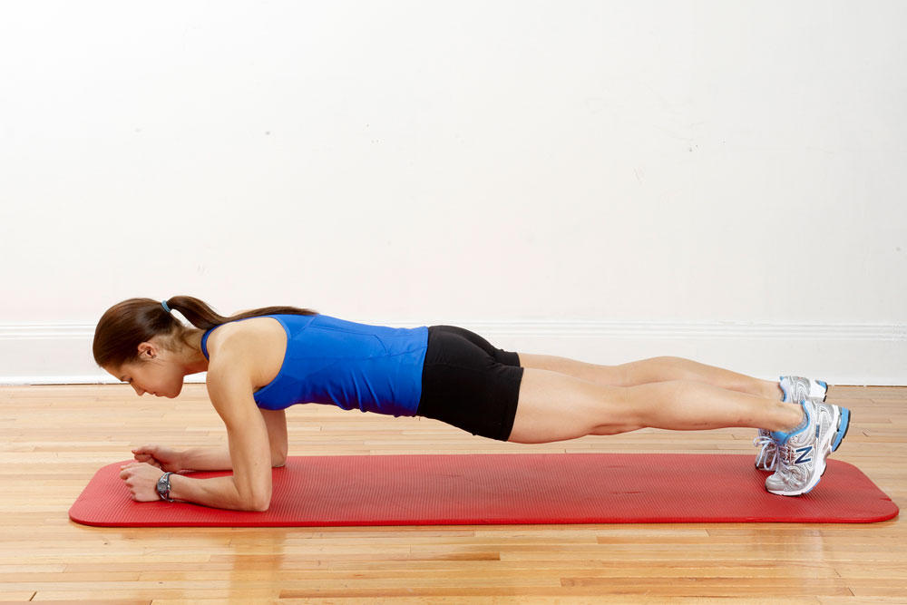
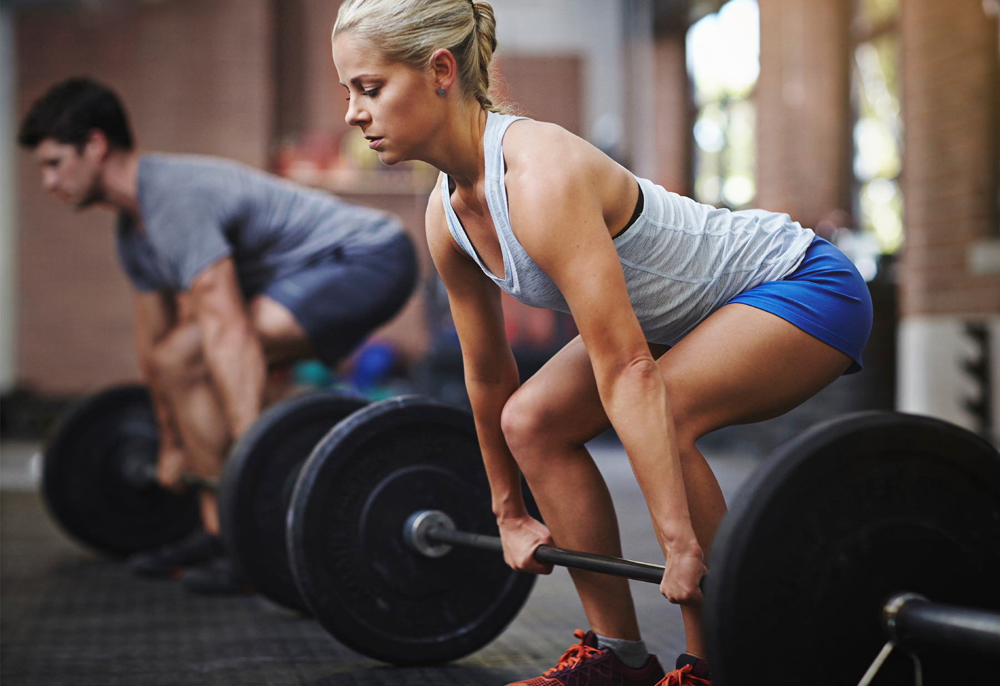
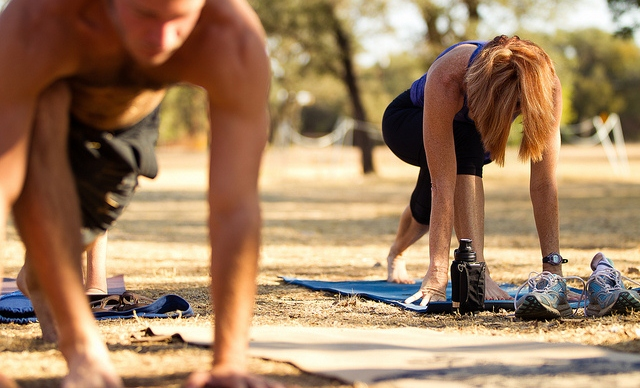
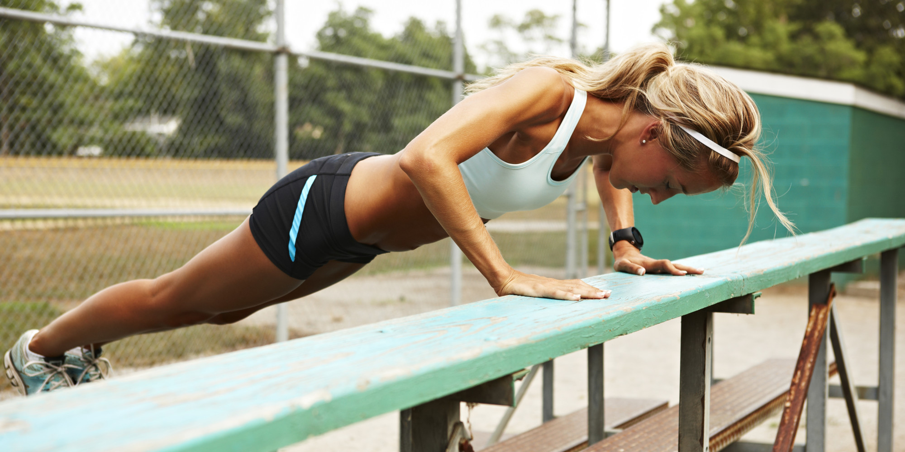

1 / 5

2 / 5

3 / 5

4 /5

5 / 5

What is strength training?
Strength training is a type of physical exercise specializing in the use of resistance to induce muscular contraction which builds the strength, anaerobic endurance, and size of skeletal muscles.When properly performed, strength training can provide significant functional benefits and improvement in overall health and well-being, including increased bone, muscle, tendon and ligament strength and toughness, improved joint function, reduced potential for injury, increased bone density, increased metabolism, increased fitness, improved cardiac function, and improved lipoprotein lipid profiles, including elevated HDL ("good") cholesterol.
Training commonly uses the technique of progressively increasing the force output of the muscle through incremental weight increases and uses a variety of exercises and types of equipment to target specific muscle groups. Strength training is primarily an anaerobic activity, although some proponents have adapted it to provide the benefits of aerobic exercise through circuit training.
Sports where strength training is central are bodybuilding, weightlifting, powerlifting, strongman, Highland games, shotput, discus throw, and javelin throw. Many other sports use strength training as part of their training regimen, notably American football, wrestling, track and field, rowing, lacrosse, basketball, pole dancing, hockey, professional wrestling, rugby union, rugby league and soccer. Strength training for other sports and physical activities is becoming increasingly popular.
How can you improve your strength?
1. Lift Heavy
Lifting heavy (greater than 90% of your one-rep max 1RM) will improve strength by recruiting what are called high-threshold motor units. The muscle fibers associated with these motor units have the most potential for increasing strength. However, they fatigue quickly. Maximal lifting is best applied to multijoint exercises (e.g., squats, deadlifts, presses, and pulls). Even though the weight is heavy, your intent should be to move the weight as fast as possible. This will ensure you’re recruiting as many fast-twitch muscle fibers as possible.
2. Lift Explosively
Speed lifts (e.g., box squats, speed deads, and speed bench) are an excellent lifting style to teach acceleration and power development. Loads around 60% 1RM should be used and moved as fast as possible. Accommodating resistance (e.g., bands and chains) can be applied to further challenge your ability to accelerate the load. Obvious explosive exercises that should come to mind are the Olympic lifts (e.g., clean and jerk and the snatch). However, medicine ball throws and kettlebell swings also fit into this category as well.
3. Do Plyometrics
Otherwise known as jump training, plyometric training involves hop- and jump-type exercises that train and develop what’s called the stretch shortening cycle. The stretch shortening cycle teaches the body to better utilize stored elastic energy to produce stronger and more forceful contractions. This improvement in reactive ability can also be explained by improvements in muscle-tendon stiffness. Body-weight or weighted plyometric exercises can be utilized such as consecutive body-weight jumps over hurdles or continuous dumbbell jump squats.
4. Slash the Volume
A common protocol for building size and strength is 5x5; that is, five sets of five reps. But if you want to focus on strength over size, try doing just two or three sets. Lowering the volume and focusing on moving the weight quickly will have a better training effect for improving strength and explosive power rather than the size of muscle. You should also experiment with logging fewer training sessions per week, which will give your central nervous system more time to recover between strength-focused training sessions.
5. Use Sprints and Drills
Nothing builds running speed and quickness on the field than sprinting itself. Performing sprint intervals or hill sprints (linear) or agility drills (multi-directional) will help develop strength and power specific to running and cutting. Being able to accelerate—and decelerate—on the field will make you stand out among the slower, less-coordinated players.
6. Try Contrast Training
Contrast training incorporates heavy strength training with plyometric training in the same workout. The physiological mechanism behind this training method is known as post-activation potentiation, or PAP for short. Basically, you'll start with a heavy strength training exercise (roughly five-rep max). After a 3–10 minute break, you'll do a similar plyometric exercise for about 5-10 reps.Research has shown an improvement (or potentiation) of the plyometric exercise, in that more force and power can be developed. An example is back squats followed by tuck jumps. Just be sure to take some time. If the break between the strength and plyometric exercise is too short, you’ll experience fatigue and a decrease in jump performance. It’s not a superset, so don’t perform these exercises like a circuit.
7. Rest Longer
When bodybuilding or training for muscle growth, lifters typically rest for only about 30-60 seconds between sets. When training for strength, though, you should increase your rest period to about 2–5 minutes, depending on the exercise. Because you're lifting heavier loads, your body will need those longer rest periods to ensure you complete the same number of reps in the subsequent sets. Your mental strength and ability to focus on the heavy set will also appreciate the longer break.
8. Hit Weak Links
You’re only going to be as strong as your weakest link. The major muscle groups that perform traditional exercises are known as your prime movers (e.g., pecs, lats, quadriceps, hamstrings, gluteus maximus, deltoids, etc.). Often, an athlete's weakest link will be his behind-the-scenes muscles, (e.g., rotator cuff, middle and lower trapezius, serratus anterior gluteus medius, abdominals, etc.). Incorporating exercises to strengthen these muscles will reduce the chance for muscle imbalances and decrease your risk for injury. The better able you are at recruiting these muscles, the more potential you have of increasing the strength in your prime movers.
9. Prioritize Simple Strength Training
Yeah, we've seen those Facebook videos of dudes squatting on top of hoverboards or stability balls. But here's the reality: Strength training shouldn’t be a circus act. Functional training has its place, and adding instability to your workout isn't a bad option for rehab or accessory balance work. But if you're really focused on training for strength, then just focus on strength! Stand on stable ground, focus on proper form, and make sure you're recovering properly to fuel your progress. Otherwise, you're liable to just waste your time.
10. Don't Static Stretch Before Workouts
Back in high school gym class, your teacher probably told you to static stretch prior to working out. News flash, coach: Dynamic warmups are now recommended to prepare you for your exercise session or competition, especially because static stretching has been shown to negatively influence strength and power production, speed, jump performance, and agility. To better prepare you for your strength and plyometric training-type workouts, save your static stretching for after the session.
Exercises for increasing strength:
1. Goblet Squat
This is a squat done while holding a weight in front of you (like a goblet), which adds more of a workout for your core and legs.
"How to: Hold a dumbbell with both hands underneath the 'bell' at chest level, and set your feet shoulder-width apart with your toes pointing slightly outwards. Push your butt back like you're sitting in a chair and descend until your elbows reach the inside of your knees.Keeping your heels flat, pressing onto the floor, pause at the bottom of the squat, and return to a full standing position. If your heels rise push your hips further back and work on partial ranges of motion until mobility and form improve. Repeat for four sets of 8-10 reps."
2. Pall of Press
This "anti-rotation" movement is challenging because you must resist rotation, working your obliques, abs, lower back, glutes, and more.
"How to: Stand perpendicular to a cable column with the column's arm set around shoulder height. Grab the handle with both hands and pull it in to the chest, maintaining tension on the cable. Feet should be shoulder-width apart, and the feet, knees, hips and shoulders all remain square and facing straight ahead throughout movement.Holding the chest high, squeeze through the stomach and press the handle away from the body, extending the arms straight while resisting any twisting or rotation. It's at this point the resistance will be highest. Continue to engage your core, and ensure you remain square and straight and resist the rotational force. Bring arms back in to the chest and repeat for three sets of 10 reps per side."
3. Dumbbell Row
The dumbbell row helps to develop a strong back, arms and core. Plus, because it works your lats, traps, and rhomboids, it supports proper posture by pulling your shoulders back and helping to stabilize your spine.
"How to: Grab a dumbbell (20 pounds is plenty for most to start) and find a bench. Start with your left hand on the bench with left arm extended, while your right arm holds the dumbbell and right foot is on the ground. Retract your shoulders, brace your abs, and pull the weight up on the side of your body until the elbow passes the side of the body. Lower under control and repeat for three sets of 6-8 reps on each side."
4. Push-Up
Push-ups are a deceptively simple functional movement that works your upper-body muscles while engaging your core and allowing you to use the full range of motion in your shoulder blades.
"How to: Start on your knees facing the floor with your hands at shoulder-width, planted directly under the shoulders. Assume a plank position by straightening your legs, supporting your weight with hands and feet. Squeeze your backside to keep your trunk engaged and lower your body slowly to the ground. The elbows should be slightly tucked — like arrows, rather than flared like the letter 'T'. Descend until your chest is just above the ground and return to the starting position by fully extending your arms, and repeat.
Note: If you can't do five push-ups with good form, elevate your hands on a bench or chair to begin building up your strength. If push-ups are easy, try elevating your feet on a chair on adding a weight vest. Make sure you're able to perform three sets of 12 push-ups with your bodyweight before adding a vest or elevating your feet."
5. Split Squat (Stationary Lunge)
This is important because it involves single-leg movements that help minimize training imbalances. Split squats will help to build lower-body strength while improving balance, flexibility, and stability in your hips.
"How to: Stand with feet shoulder-width apart. Next, take a step forward with your right foot, and a large step backwards with your left foot -- this is your starting position. Keep the front heel flat and descend into a lunge, bringing your back knee towards the floor. Stop just short of the knee touching the ground on the back leg with the front heel still flat on the ground. Pause for one second and return to standing. Perform 6-8 reps on your right leg, then 6-8 reps on your left leg, and repeat for three sets."
6. Lateral Squat
This is a combination of a lateral lunge and a squat, useful for stretching your groin and inner thighs while also working out your hips, thighs, and trunk.
"How to: Stand tall with your feet wider than shoulder-width apart, heels flat on the ground and toes pointed forward. Initiate the movement by pushing your hips backwards, bending your left leg, and leaning to your left with your right foot angled out slightly. The left knee should be bent, left heel flat on the floor, and right leg extended with your weight over the left side of your body. This is one rep. Return to a standing position and descend doing the same movement on your right side to even things out. Perform six reps per leg for three sets."
7. Hip Extension (Glute Bridges/Hip Thrusts)
This exercise helps to train your glutes, which are often underutilized if you sit for long periods each day.
"How to: Position the back of your shoulders across a stable bench, feet planted firmly on the ground, about six inches away from your butt (a). Squeezing the glutes, push through your heels to rise up into a bridge position with the hips fully extended. The shoulders down to the knees should be in line, with the knees bent at 90 degrees. Hold the position at the top, glutes, core and hamstrings engaged (b). Lower the hips down and repeat for three sets of eight reps (c). Beginners can continue with just bodyweight, whereas more advanced lifters can progress to rolling a barbell over the top of the hips for added difficulty."